Соковыжималки
Обзор технологий
Сокотерапия
Американский врач Норман Уокер (1886–1985) одним из первых начал активно пропагандировать сокотерапию как оздоровительный метод.
СВЕЖЕВЫЖАТЫЕ СОКИ — ПРЕКРАСНОЕ ДОПОЛНЕНИЕ К ПИЩЕ.
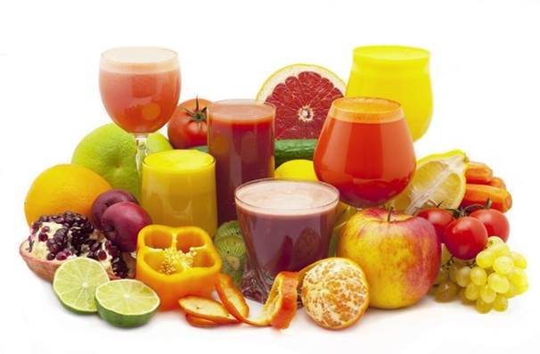Свежевыжатые соки — прекрасное дополнение к пище. Они являются гораздо более мощными по силе воздействия на организм, чем изолированные питательные вещества в витаминных пилюлях. Полезные вещества в соках воздействуют на обмен веществ комплексно. Это носит название синергетического эффекта, что означает, что питательные вещества, естественным образом соединенные в пищевых продуктах, работают вместе гораздо более эффективно, чем когда они по отдельности поступают в организм в виде искусственных добавок.
Многие люди поначалу думают, что работа по отжиму сока будет отнимать у них много времени и сил, но потом они бывают приятно удивлены, обнаружив, что это намного проще, чем они себе представляли.
Если вы сторонник здорового образа жизни, мы рекомендуем вам соковыжималку высокого и среднего ценового диапазона. Дешевые центробежные соковыжималки легко ломаются, производят сок крайне низкого качества, оставляют много сока в жмыхе и бывают очень громкими.
Технология производства сока
Федеральный закон Российской Федерации от 27 октября 2008 г. N 178-ФЗ "Технический регламент на соковую продукцию из фруктов и овощей".
Сок - жидкий пищевой продукт, получен из съедобных частей доброкачественных, спелых, свежих или сохраненных свежими, либо высушенных фруктов и (или) овощей путем физического воздействия на эти съедобные части. Консервирование сока может быть осуществлено только с использованием физических способов, за исключением обработки ионизирующим излучением.
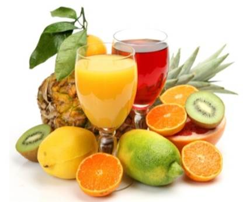Соки бывают следующих видов:
- Свежевыжатый сок - сок прямого отжима, произведенный из свежих или сохраненных свежими фруктов и (или) овощей в присутствии потребителей и не подвергавшийся консервированию
- Сок прямого отжима - сок, произведенный непосредственно из свежих или сохраненных свежими фруктов и (или) овощей путем их механической обработки.
В России продается не более 2% такого сока, а все остальное 98% – так называемые восстановленные соки, маркируемые «100%» или «натуральный».
Технология их производства тоже весьма традиционна: плоды очищаются, пропускаются через соковыжималку, получившийся сок разводится водой, осветляется при помощи лимонной кислоты, консервируется путем добавления сахара. После этого пастеризуется и разливается по банкам или пакетам.
Эти слова говорят лишь о том, что сок в пакете по своим параметрам (составу, цвету и запаху) идентичен свежевыжатому. Конечно, современные пищевые технологии шагнули далеко вперед, и можно чему угодно придать вкус чего угодно.
- Концентрированный сок - сок, произведенный путем физического удаления из сока прямого отжима части содержащейся в нем воды не менее чем в два раза. В концентрированный сок могут быть добавлены концентрированные натуральные ароматообразующие вещества, произведенные из одноименного сока либо из одноименных фруктов или овощей.
Изначально соковый концентрат производили ради создания НЗ (неприкосновенного запаса) на случай неурожайного года. Со временем эту технологию стали использовать для удобства транспортировки продукции в другие страны. Для этого свежеприготовленный сок (апельсиновый, ананасовый, виноградный, грейпфрутовый) выпаривают при температуре 35-40 °С в специальных камерах с пониженным давлением.
После этого соковый концентрат отправляется в далекий путь, чтобы через несколько тысяч километров снова очутиться на заводе, где его восстановят и назовут натуральным соком.
- Восстановленный сок - сок, произведенный из концентрированного сока или концентрированного сока и сока прямого отжима и питьевой воды.
Концентрат производители закупают за границей. Затем на месте восстанавливают его водой, вот и весь процесс приготовления. К стоимости всего выше сделанного добавляется упаковка и прочие надбавки, которые к качеству сока отношения никакого не имеют.
- Диффузионный сок - сок, который произведен путем извлечения с помощью питьевой воды экстрактивных веществ из свежих фруктов и (или) овощей либо высушенных фруктов и (или) овощей одного вида, сок из которых не может быть получен путем их механической обработки. Диффузионный сок может быть подвергнут концентрированию, а затем восстановлению.
Диффузионная технология производства сока предусматривает насыщение плодов влагой при помощи вакуумной установки с последующим отделением мезги, нагреванием и фильтрацией для отделения грубодисперсных частиц. Стоит отметить, что концентрат обрабатывают паром с температурой 100-120°С в течение 1-2 мин.
- Нектар, морс, сокосодержащий напиток
Нектар, Морс, Сокосодержащий напиток – это названия соковой продукции, различающейся между собой составом и вкусовыми качествами. Со свежеотжатыми соками их мало что роднит.
Технология PULP-WASH
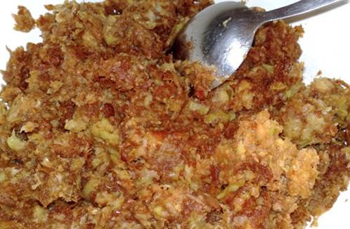Оставшиеся после прямого отжима остатки апельсина или яблок замачиваются, отстаиваются, затем снова отжимаются, и так несколько раз. В получившуюся жидкость с частичками мякоти добавляется лимонная кислота, ароматизаторы, сахар или глюкозно-фруктозный сироп. Правда есть хорошая новость, что производителю все-таки нельзя называть это «соком», а только «нектаром» или «напитком».
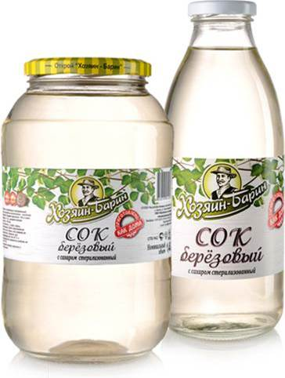Как уже упоминалось, для придания сладости в напиток («сок») добавляется либо сахар, либо его дешевый аналог – глюкозно-фруктозный сироп. К слову о последнем – в отличие от сахара, он не вызывает чувства наполнения, и его можно выпить сколь угодно много.
Другие минусы этого сиропа состоят в том, что он в несколько раз калорийнее сахара, а после употребления его калории переходят сразу в жир. Именно глюкозно-фруктозный сироп, содержащийся в коле и выпечке, ответственен за эпидемию современного ожирения.
Как определить качество сока?
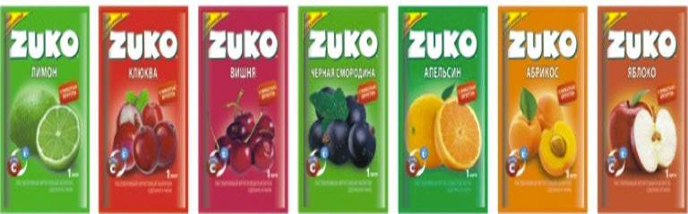Один из самых простых способов проверить натуральность сока – добавить соду и прокипятить его. Натуральный оранжевый сок (апельсиновый, персиковый, абрикосовый) при кипячении теряет цвет, тогда как красителям температура не страшна. Для темных соков (вишневых или виноградных) существует другой тест для определения качества. Если добавить в настоящий сок несколько щепоток обычной пищевой соды, то цвет напитка должен заметно потемнеть.
Сколько в промышленном соке витаминов?

Производители уверяют, что восстановленные соки ничем не уступают фрешам.
Главный аргумент - это щадящее производство, благодаря которому, соковый концентрат выпаривается не при 100°C, разрушительных для витаминов, а при 35-40°C.
Делается это с целью защитить сок от микробов и продлить срок его годности. Однако во время пастеризации сок нагревается до 105 °C, а значит, выжить у витаминов в таких условиях нет ни малейшего шанса.
Почему полезно пить именно свежевыжатые соки?
Ферменты, или энзимы
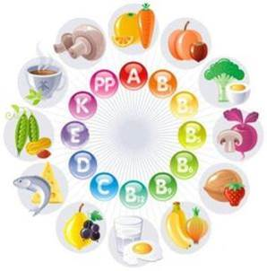Главную ценность свежих фруктов и овощей представляют ферменты, или энзимы. Это биологически активные вещества, усиливающие, регулирующие, многократно ускоряющие жизненно важные процессы и изменения в организме. Употребляя в пищу, дары природы, человек, по сути, вводит в свой организм аккумулированную солнечную энергию. Свежевыжатый сок содержит огромное количество витаминов, микроэлементов и полезных кислот, являющихся строительным материалом организма. Отсюда и великолепный очищающий эффект сырых соков, и прекрасная их способность насыщать организм питательными веществами.
Но эти уникальные вещества нестойкие — они разрушаются при нагревании до 52 °С. Вот почему так важно употреблять сырые, а не вареные или консервированные овощи и фрукты.
Пить соки или есть свежие овощи и фрукты?
Что организму проще усвоить
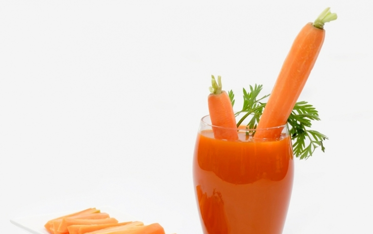Пить соки или есть свежие овощи и фрукты?
Для переваривания твердой пищи требуется много часов, прежде чем ее питательные вещества станут достоянием клеток и тканей организма. Свежевыжатые соки же усваиваются так быстро, как никакая другая пища, всего лишь за 10—15 минут, и почти полностью используются для питания крови, регенерации и оздоровления тканей, при этом пищеварительная система затрачивает минимум энергии.
К тому же вряд ли Вы осилите 3—4 морковки за раз, а уж есть свежую свёклу, вряд ли вообще будете!
Свежевыжатый сок — это те же энзимы, только освобожденные от грубых растительных волокон — клетчатки. Несмотря на то, что клетчатка практически не представляет питательной ценности, она действует как метла во время перистальтического действия кишечника. Поэтому, кроме питья соков, конечно же, необходимо есть сырые овощи и фрукты.
Сколько времени можно хранить свежевыжатые соки?
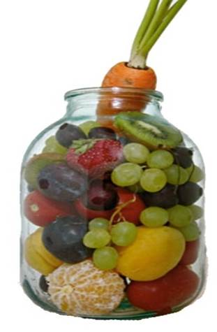Все зависит от сока, который приготовили. Разные соки по-разному ведут себя, вступая в окислительный процесс с кислородом и светом. Если Вы не можете выпить сок сразу после его отжима, храните его в темном прохладном месте — в холодильнике, в плотной упаковке. Дело в том, что под воздействием света
и кислорода витамины и энзимы постепенно разрушаются.
Но даже в холодильнике хранить соки больше нескольких часов не имеет смысла.
Свежевыжатые соки во всем мире считаются самыми дорогими. Они не проходят термообработку и содержат больше витаминов, но долго не хранятся (даже охлажденные льдом не более 5 дней), поэтому большинство соков готовят из концентратов.
Рекомендации
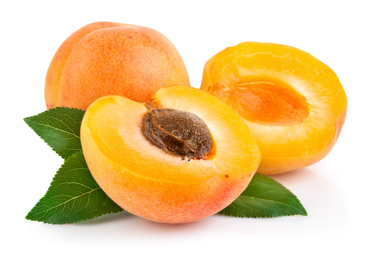
Абрикосовый сок укрепляет сердечную мышцу и помогает выводить лишнюю жидкость из тканей.
Пьют за 2 часа до приема пищи, чтобы нормализовать кислотность желудка.
Ананасовый сок Благотворно влияет на функцию почек и печени, а также содержит вещество "бромелайн", улучшает память.
Рекомендуется пить через трубочку, так как активные кислоты разрушают эмаль зубов.

Сок цитрусовых (апельсины, лимоны, мандарины, грейпфрут) повышают жизненный тонус, снимают усталость и укрепляют кровеносные сосуды.
Не следует пить натощак, может обострить проблемы с желудком или кишечником.
Сок нужно выпить сразу после приготовления. Пить через трубочку, чтобы избежать кариеса.
Арбузный сок можно пить в любое время.
Арбуз ускоряет выведение холестерина из организма, является незаменимой пищей для больных склерозом, подагрой, артритами, диабетом.
Низкая калорийность арбуза позволяет широко применять его при диетах.
Виноградный сок улучшает обмен веществ, удаляет из организма шлаки, используют при заболеваниях крови, обладает прекрасным тонизирующим действием и богат глюкозой.
Принимают за 2 часа до, или непосредственно перед едой, готовит печень к приему пищи.
Перед приемом его следует разводить водой в пропорции 1:1.
Грушевый сок выводит из организма токсины, тяжёлые металлы, камни в почках, лечении заболеваний желудка, при отравлении грибами, при гастрите, холецистите, болезнях печени. Употребляют за 10—15 мин до еды, улучшает аппетит.
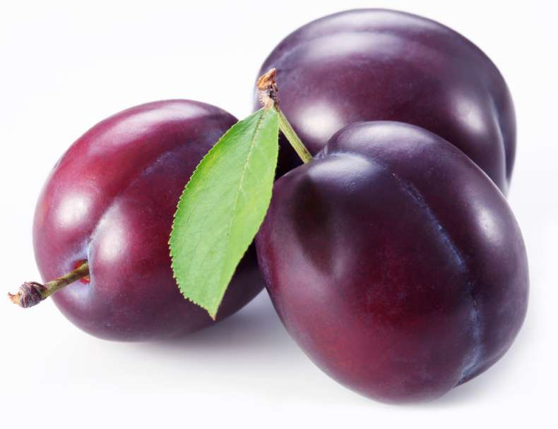Сливовый сок регулирует работу кишечника, понижает кислотность желудочного сока, препятствует процессу старения человека, помогает при проблемах в мочеполовой сфере. Начинать с нескольких ложек натощак в выходной день, так как сок может оказать сильное послабляющее действие.
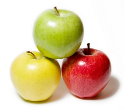Яблочный сок защищает мозговые клетки, предотвращает развитие очень серьёзного заболевания – болезни Альцгеймера, помогает восстанавливаться после тяжёлых нагрузок, укрепляет сердце и сосуды, повышает тонус организма, утоляет жажду и освежает, укрепляет иммунитет, предотвращает образование камней в почках. Пить в любое время от 0,5 до 4 литров в день. Самый богатый витаминами и минералами фрукт!!!
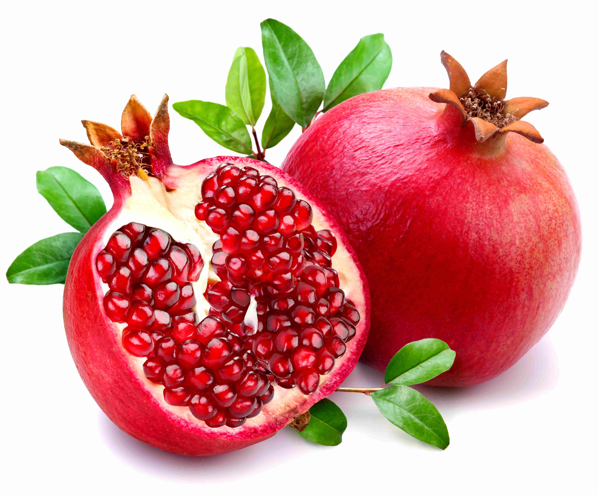Гранатовый сок приводит в норму гемоглобин, а его мочегонное действие очень полезно тем, кто страдает отёками и гипертонией, может угнетать процессы образования и развития в организме раковых опухолей, особенно рака простаты, так что он очень полезен мужчинам. Не следует употреблять в чистом виде – его всегда нужно разбавлять, и лучше всего свекольным, морковным соком 1: 3(1/3 сока граната, 1/3 сока свеклы 1/3 сока моркови). Или просто кипячёной водой. Пить не более 2 стаканов в день.
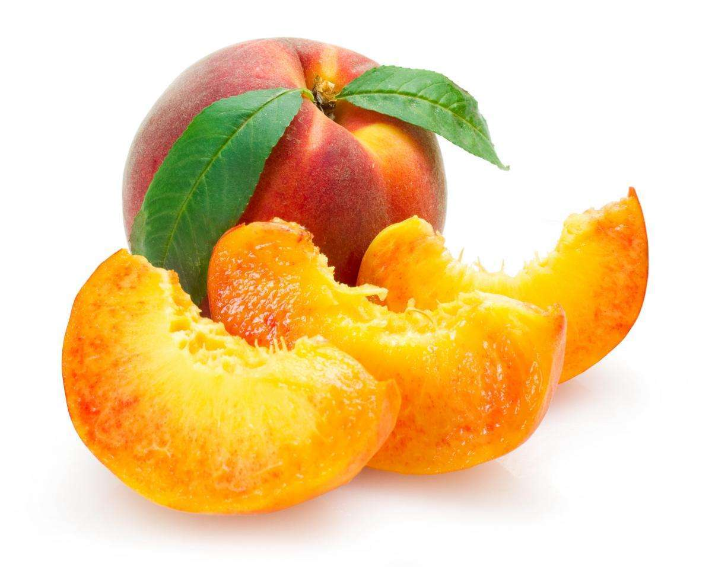Персиковый сок пьют по 0,5 стакана за 15-20 мин до еды. При нарушениях сердечного ритма, малокровии, заболеваниях желудка, при пониженной кислотности, при запорах принимать по 1/4 стакана сока персика за 15-20 мин до еды.

Морковный сок полезен людям с пониженным иммунитетом и детям. Бета-каротин полезен для зрения. Кормящей матери рекомендуется выпивать до 0,5 литра морковного сока - от него молоко становится лучше.
Необходимо употреблять со сливками, молоком, растительным маслом или жирной пищи для усваемости. Разбавлять с яблочным 1:1.
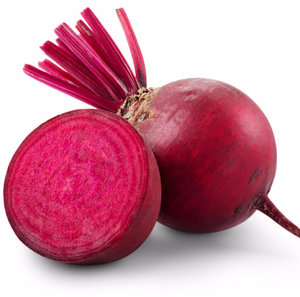Свекольный сок. Очень ценен для улучшения состава крови, особенно для образования эритроцитов - красных кровяных телец. Сок обладает прекрасными очищающими свойствами, помогает при раке, нормализует цикл.
В соке из свеклы есть вредные соединения, которые разрушаются при соприкосновении с воздухом. Поэтому перед употреблением свекольный сок необходимо не менее 2–3 часов отстаивать в холодильнике в открытой посуде. Привыкать к свекольному соку нужно постепенно, начиная с одной столовой ложки в день.
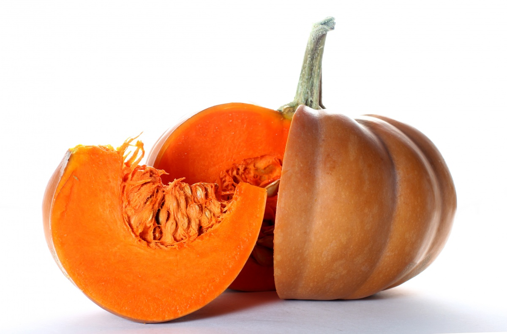Тыквенный сок улучшает работу желудочно-кишечного тракта, способствует желчеотделению, рекомендуют людям с сердечно - сосудистыми заболеваниями, сопровождающимися отеками. Особо полезен тыквенный сок при заболеваниях почек и печени. Принимать тыквенный сок можно по полстакана один раз в день. При бессоннице рекомендуется на ночь выпивать 200 мл свежего сока сырой тыквы, 1 с.л. меда, при камнях в почках и мочевом пузыре – по половине стакана тыквенного сока 3 раза в день.
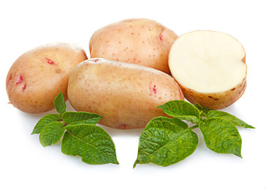Картофельный сок обладает общеукрепляющим, ранозаживляющим, противовоспалительным и мочегонным действием, при лечении гастритов, снижения кислотности желудка, язвенных болезней желудка.
Сок нужно выпить в течение 10 минут, иначе будете наслаждаться мутной жидкостью, быстро окисляется.
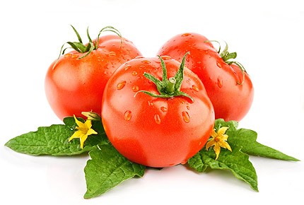Томатный сок стимулирует работу желудочно-кишечного тракта, снижает риск возникновения рака. Он очень полезен беременным и кормящим женщинам. Благодаря своей низкой калорийности он доступен людям с избыточным весом. В свежеприготовленном соке много фитонцидов, подавляющих процессы брожения и гниения в кишечнике. Нужно пить за 20–30 минут до еды, так как он повышает готовность желудка и кишечника к перевариванию пищи.
Добавление соли снижает целебные свойства сока. Вместо соли можно добавить измельченный чеснок и свежую зелень: укроп петрушку, кинзу. Интересный факт: в помидорах есть вещество, освобождающее сексуальность и снимающее скованность – а сегодня эта проблема знакома многим людям. Возможно, поэтому древние перуанцы называли томат «яблоком любви»
Примечания.
Соки чеснока, лука, редиса, редьки, хрена, щавеля, крапивы применяют обычно в качестве добавки к другим сокам или смесям соков в количестве не более одной чайной ложки. Сок должен быть приятным, освежающим. Поэтому, к пресным сокам добавляют сок цитрусовых, кислых фруктов и ягод. Острые, горькие, неприятные на вкус соки можно смешать с подслащенной или кислой сметаной, молоком, кефиром, молочной сывороткой, миндальным или ореховым молоком. Можно улучшить вкус сока медом, глюкозой, нарезанной зеленью укропа, петрушки, мелко натертой лимонной или апельсиновой коркой, ванилином, тмином и т.д. Соки из брусники, лимона, картофеля, корнеплодов петрушки, краснокочанной капусты, кольраби, листьев красной свеклы обычно пьют только в смеси с другими соками в количестве не более 25 г за один прием. Соки семечковых плодов (яблоки, груши), цитрусовых, винограда, моркови, помидоров, тыквы можно пить отдельно или в смесях не более чем по 200 г на прием. Сок арбуза и дыни рекомендуется пить самостоятельно, не смешивая ни с какими соками. Цитрусовые, бахчевые, а также бананы нужно обязательно очищать от кожуры. Фрукты и овощи, из которых готовят сок, лучше не очищать от кожицы, поскольку под ней находится наибольшее количество витаминов. Не следует использовать для размешивания металлическую ложку — металл разрушает витамин С. Соломинка при подаче фреша — не украшение, а необходимость защитить зубы от воздействия кислот, которые смягчают эмаль.
Спектр продуктов, отжатых в соковыжималке BORK S800
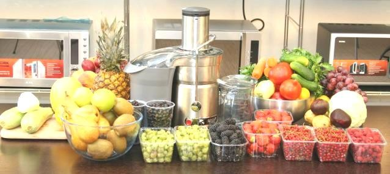Сорта яблок для получения сока
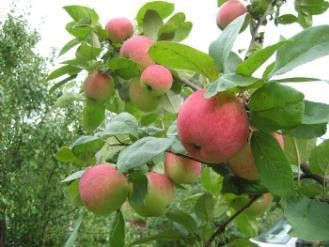
Сорт яблок: Алёнушкино
Сорт распространён в южных областях Центральной России.
Плоды потребляются в свежем виде и в продуктах переработки: соках, пюре, чипсах.
Достоинства сорта: высокая экологическая адаптивность, урожайность, товарность плодов летнего сорта, интенсивного типа.
Сорт яблок: Анис алый (Анис бархатный, Анис сафьянный, Анис красный).
Анисы – это старинные поволжские сорта осеннего созревания.
Плоды потребляются в свежем виде и хороши для переработки на соки, приготовления повидла, пастилы, сушеных яблок и других продуктов.
Достоинства сорта: высокая экологическая приспособленность, высокая урожайность и долговечность.
дерева, красивая окраска, приятный вкус и транспортабельность плодов, пригодность для потребления не только в свежем виде, но и использование в виде сырья для перерабатывающей промышленности.
Сорт яблок: Антоновка обыкновенная. Эффективное разведение Антоновки обыкновенной в Орловской, Брянской, Смоленской, Московской, Тульской, Калужской, Липецкой, Тамбовской, Пензенской, Рязанской, Курской, Воронежской областях и Белоруссии.
Плоды потребляются в свежем виде и хороши для переработки: соков, компотов, повидла, приготовления пастилы и мармеладов. Особо ценны они для мочения.
Достоинства сорта: высокая экологическая приспособленность, урожайность, высокая товарность плодов, имеющих неповторимый "антоновский" аромат, пригодность для потребления в свежем виде, для различных видов переработки и мочения.
Сорт яблок: Богатырь.
Распространен в областях по Северо-Западному, Центральному и Центрально-Черноземному регионам.
Плоды потребляются в свежем виде, хороши в мочке и для переработки (соки, компоты, повидла).
Достоинства сорта: высокая экологическая приспособленность, скороплодность, ежегодная обильная урожайность, длительная лежкость плодов, пригодность для переработки.
Сорт яблок: Голден Делишес.
Сорт получил широкое распространение по всем южным государствам СНГ, югу России
Плоды потребляются в свежем виде и хороши для переработки: соков, компотов, пастилы, мармеладов, чипсов.
Достоинства сорта: Скороплодность, высокая урожайность, качество плодов на уровне мировых стандартов.
Сорт яблок: Грушовка московская (Грушовка, Скороспелка).
Сорт распространен по Северному, Северо- Западному, Центральному, Волго-Вятскому, Средневолжскому, Уральскому, Западносибирскому и Восточносибирскому регионам.
Плоды не пригодны для длительных перевозок. Основное назначение плодов - потребление в свежем виде. Подходит для переработки и приготовления соков.
Сорт яблок: Лобо.
Распространяется в Белгородской, Воронежской, Курской, Липецкой и Тамбовской областях. В Нижнем Поволжье этот сорт проходит широкое производственное испытание и признан перспективным сортом.
Достоинства сорта: высокая стабильная урожайность, крупные плоды отличаются высокими товарными и вкусовыми качествами. Сорт используют для приготовления соков, пюре, пастилы.
Сорт яблок: Осеннее полосатое (Штрейфлинг, Штрифель).
Сорт распространен: в Северном, Северо- Западном, Центральном, Волго-Вятском, Центрально-Черноземном и Средневолжском регионе.
Достоинства сорта: хорошая урожайность, высокие вкусовые качества плодов, товарность плодов. Сорт используют для приготовления соков. Так же плоды употребляются в свежем виде.
Сорт яблок: Мелба.
Сорт представлен почти во всех регионах России кроме Северного, Уральского и Дальневосточного.
Плоды, сравнительно хорошо для летнего сорта, переносят перевозку и могут быть сохранены в условиях холодильника до ноября, а иногда и до января.
Достоинства сорта: высокая скороплодность, урожайность, хорошие товарные и потребительские качества плодов. Подходит для отжима сока.
Сорт яблок: Гренни Смит.
Сорт представлен в Краснодарском крае.
Плоды употребляют в свежем виде и в виде сухофруктов; они пригодны также для различных видов переработки: получения соков, компотов, киселей и плодового вина, сидра, приготовления варенья, а благодаря содержанию пектина готовят джемы, повидла, желе и муссы.